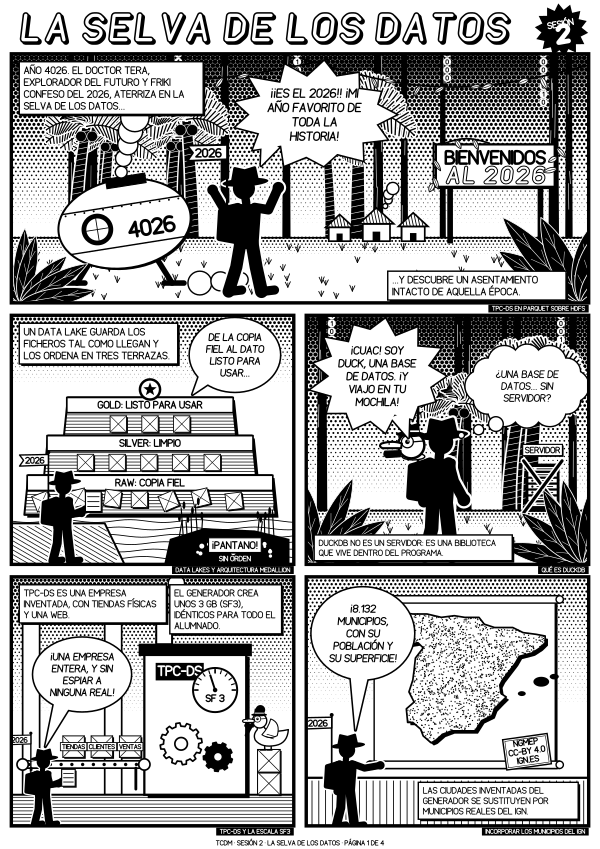
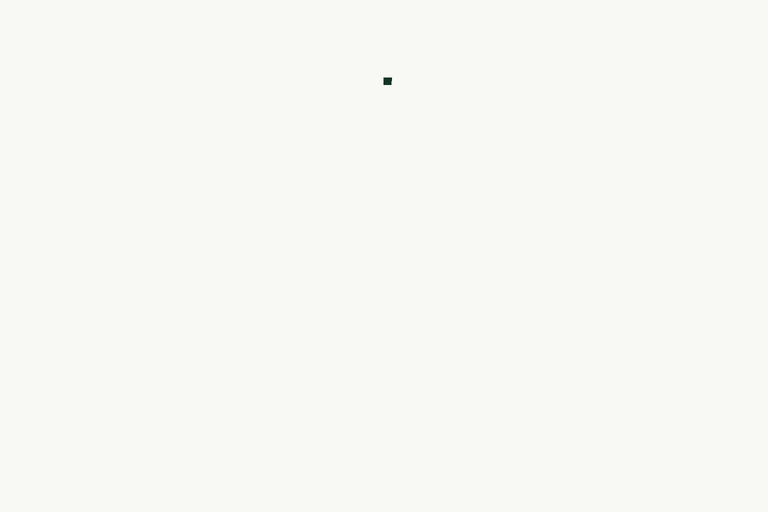
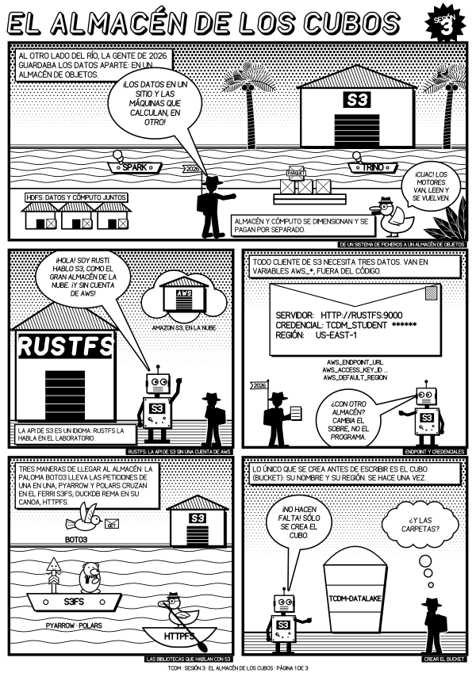

Sesión 2
La selva de los datos
Una empresa de mentira con DuckDB, municipios reales del IGN, Parquet sobre HDFS, tres bibliotecas que leen lo mismo y las primeras preguntas de negocio. Cuatro páginas A4.

Material docente
Apuntes, transparencias y materiales de las sesiones del curso 2026/2027.
Parte 1
Presentación de la asignatura, transparencias de apoyo y resúmenes de repaso de las sesiones.
Información de la asignatura
Organización, planificación, evaluación y bibliografía del curso.
Teoría
Imágenes, contenedores, volúmenes y redes a través del clúster del
curso: cómo se construyen las imágenes, qué describe cada fichero
Compose, qué conserva cada orden del Makefile de
entorno/ y cómo ver en qué estado está el sistema.
Teoría
Repaso de media hora de la sesión 2 antes de empezar la 3: la
arquitectura medallion, la generación de TPC-DS con DuckDB, el cruce
con los municipios del IGN, la capa raw en HDFS, las
vistas de DuckDB sobre Parquet, las dimensiones con versiones y cuatro
consultas de negocio.
Teoría
Repaso de la sesión 4 antes de seguir con Spark: los DataFrames y sus
expresiones, la lectura de Parquet, transformaciones y acciones,
agrupaciones y uniones, las vistas y Spark SQL, y cómo se ejecuta el
trabajo (explain, particiones, shuffle, driver y
ejecutores sobre YARN, cache y repartition).
Teoría
Instrucciones para entrar en el curso TCDM 26-27 AWS Learner
Lab de AWS Academy, lanzar el laboratorio, abrir la consola de
AWS y copiar las credenciales temporales a
~/.aws/credentials, con los límites de la cuenta y lo
que hay que hacer al terminar cada sesión.
Parte 2
Una sesión por semana: cada una tiene su notebook, que se trabaja en el laboratorio del curso.
Antes de cada sesión
Un script que indica si tu equipo tiene las herramientas del curso
y si tu copia del material coincide con la última versión publicada
(s1 hasta la sesión que vas a empezar, y
entorno/). Se ejecuta después de hacer el git pull
ó make -C entorno actualizar. Si falta algo, te dice qué y cómo
arreglarlo. En una terminal del equipo (en Windows, la de Ubuntu de
WSL2):
curl -fsSL https://raw.githubusercontent.com/dsevilla/tcdm-public/26-27/entorno/comprobar-entorno.sh | bash -s s3
Cambia s3 por la sesión que vas a empezar. Cuando
tengas el material actualizado, también puedes ejecutarlo desde la
raíz de tu copia con bash entorno/comprobar-entorno.sh s3.
Sesión 1
Por qué existe Big Data, el modelo de programación MapReduce, y la puesta en marcha del clúster simulado: HDFS, YARN, ejecución de MapReduce y recuperación del entorno.
Sesión 2
Introducción de TPC-DS, el dataset de gestión empresarial que se usa en el resto del curso (una empresa minorista que vende en tiendas, por catálogo y por web), organización de un data lake en HDFS, las distintas interfaces de acceso a HDFS, y lectura de datos con WebHDFS, PyArrow, Polars y DuckDB.
Sesión 3
Objetos Parquet, prefijos, API S3 y acceso con distintas bibliotecas.
Sesión 4
DataFrames, ejecución perezosa, particiones y despliegue sobre YARN.
Sesión 5
Recorrido de TPC-DS desde raw hasta conjuntos silver y gold.
Sesión 6
Catálogo compartido, particiones, estadísticas y consultas desde varios motores.
Sesión 7
Snapshots, evolución de esquema y optimizaciones observables.
Sesión 8
Micro-lotes de ficheros y actualización incremental de tablas Iceberg.
Parte 3
Cómics y vídeos que acompañan a las sesiones.
Para repasar con una sonrisa
Cada sesión tiene su cómic, dibujado por programa. Los protagoniza el doctor Tera, un explorador del año 4026 al que le apasiona el 2026, y cuentan, sin órdenes ni código, qué se hace en la sesión y por qué. Sirven para ver el recorrido completo antes de abrir el notebook, o para repasarlo después; no lo sustituyen.

Sesión 2
Una empresa de mentira con DuckDB, municipios reales del IGN, Parquet sobre HDFS, tres bibliotecas que leen lo mismo y las primeras preguntas de negocio. Cuatro páginas A4.

Sesión 3
Los Parquet de S2 cruzan el río hasta un almacén de objetos. Rusti, el conserje de RustFS, enseña la API de S3 petición a petición; después llegan la copia, la lectura por rangos y las mismas cifras desde tres bibliotecas. Tres páginas A4.
Para ver sin abrir el notebook
Vídeos cortos que presentan una idea de las sesiones. Llevan subtítulos incorporados.
Sesión 1
La diferencia entre el sistema de ficheros local de cada nodo y
el espacio de nombres de HDFS: cómo hdfs dfs -put
parte un fichero en bloques y los replica, qué guarda un
DataNode en su disco, qué pasa cuando uno se rompe y cómo se
recuperan las réplicas al sustituirlo. Unos cuatro minutos.
Sesión 3
Qué es el almacenamiento de objetos, quién lo ofrece y qué
ventajas tiene, contado como un anuncio de teletienda: cubos,
claves, durabilidad, precios, la letra pequeña y un
aws s3 cp. Casi dos minutos.
Sesión 4
Cómo Spark reparte la lectura de un Parquet entre ejecutores sobre YARN: grupos de filas, preferencia por los datos locales, sumas parciales y shuffle para obtener el beneficio neto por año. Unos tres minutos.
Sesión 4
Una venta busca su dirección: qué filas viajan en el
shuffle, cómo se ordenan y unen por la clave de dirección
con SortMergeJoin, y cuándo conviene copiar una tabla
pequeña para usar BroadcastHashJoin. Unos dos minutos
y medio.